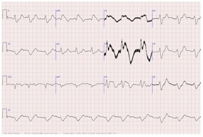
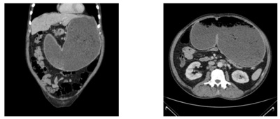
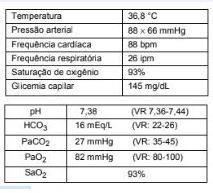

Questão 1 · Distúrbios do equilíbrio acidobásico DHE · Nef rologia · 4000194307Um paciente desnutrido, com 6 meses, deu entrada no pronto-socorro, acompanhado por familiares que relatam diarreia abundante e piora progressiva do nível de consciência, que vem ocorrendo há 2 dias. Ao exame, o paciente encontra--se desidratado, hipocorado, sonolento, comatoso e sem sinais localizatórios. Mantido em ar ambiente, colheu-se uma gasometria arterial, que revelou pH = 7,22; pressão parcial de CO2 de 48 mmHg; pressão parcial de O2 de 75 mmHg; saturação de O2 de 94%; bicarbonato de 12,5 mEq/L e excesso de bases (BE) = -13. Considerando o quadro descrito, assinale a opção que apresenta o diagnóstico correto para o caso.
A Acidose mista, respiratória e metabólica.
B Acidose metabólica compensada por hiperventilação alveolar.
C Alcalose respiratória compensada por uma acidose metabólica.
D Acidose metabólica compensada por uma alcalose respiratória.
Questão 2 · Nef rologia · 4000185477Paciente de 56 anos em pós-operatório imediato de piloroplastia devido a estenose pilórica, vem apresentando vômitos importantes, recorrentes e de difícil controle. Gasometria arterial: pH 7,56; PaCO2 38mmHg; Excesso de base + 8mEq/L; HCO3 34mEq/L; PaO2 110mmHg. A qual distúrbio a gasometria arterial apresentada está relacionada?
A Alcalose metabólica
B Alcalose metabólica e acidose respiratória
C Alcalose mista
D Alcalose respiratória
Questão 3 · Nef rologia · 4000184676Paciente de 20 anos, gênero feminino, procura atendimento de emergência por queixas de fraqueza muscular e câimbras há 2 semanas com piora importante na data da admissão hospitalar. Sinais vitais: PA=114x71mmHg, FR=18ipm, FC=78bpm, afebril. Não apresenta disestesias ou alterações em reflexos tendinosos. Exames laboratoriais: Hb=12,5g/dl, leucócitos totais=7400/mm₃ e plaquetas=180mil, Na=137mEq/l, K=2,1mEq/l, creatinina=1,0mg/dl, gasometria venosa: ph=7,15 HCO₃=15 pCO₂=28, glicemia=98mg/dl Cl=112mEq/l, Urina I: ph=6,7 densidade=1015 ausência de proteínas, corpos cetônicos, leucocitúria ou hematúria. Qual diagnóstico poderia justificar o quadro clínico e os achados laboratoriais da paciente?
A Amiloidose
B Síndrome de Sjogren
C Síndrome de Bartter
D Hiperaldosteronismo primário
Questão 4 · Nef rologia · 4000183287Uma paciente de 65 anos idade, com antecedentes de hipertensão e diabetes, deu entrada no pronto-socorro, e seus dados eram os seguintes: paciente sonolenta e taquidispneica; MEG; escala de coma Glasgow 7; FC de 120 bpm; frequência respiratória (FR) de 40 ipm; PA igual a 100 mmHg × 55 mmHg; BRNF 2T sem sopros; MV+ bilateral sem RA. Exame abdominal prejudicado pelo neurológico. Foram colhidos exames, que revelaram o seguinte: pH = 7,32; pCO₂ = 22 mmHg; bicarbonato = 12; pO₂ = 100; saturação = 99%; creatinina = 1,5; ureia = 40 mg/dL (normal: até 40); ácido úrico = 10 (referência para mulheres: 2,4 – 5,7); HB = 10; leucócitos = 10.000; e plaquetas = 80.000. Considerando o caso clínico, assinale a alternativa que apresenta o distúrbio ácido-base compatível com o quadro apresentado.
A acidose metabólica simples
B acidose respiratória simples
C distúrbio misto (acidose metabólica e alcalose respiratória)
D distúrbio misto (acidose respiratória e alcalose metabólica)
E distúrbio misto (acidose metabólica e acidose respiratória)
Questão 5 · Alcalose respiratória · Nef rologia · 4000182156Mulher, 60 anos, tabagista (40 anos-maço), queixa-se de dispneia aos mínimos esforços. Nega tosse, febre ou outros sintomas gripais. Exame físico: REG, corada, hidratada, sonolenta; Peso = 150 kg e altura = 1,60 m; Ap. resp.: murmúrio vesicular presente, diminuído globalmente, sem RA, SatO₂: 97% com cateter de O₂ a 4L/min. Foi coletada uma gasometria arterial para avaliação. Qual é o resultado de gasometria arterial esperado?
A pCO₂ = 20 mmHg
B HCO₃ = 42 mEq/L
C pO₂ = 50 mmHg
D pH = 7,5
Questão 6 · Ânion Gap · Acidose metabólica com ânion gap aumentado · 4000182101Manif estações clínicas da acidose metabólica Pré-escolar de 4 anos cocm história de trauma contuso em membro inferior esquerdo há 5 dias, evoluiu com febre, associada a edema, hiperemia, dor e calor no membro dá 2 dias. Há 12 horas, encontra-se apático e alternando irritabilidade com sonolência. Chega à sala de emergência com frequência cardíaca 160 bpm, frequência respiratória 30 ipm, pressão arterial 70//20 mmHg, saturação de oxigênio 95%, tempo de enchimento capilar menor que 1 segundo, com extremidades quentes e avermelhadas e pulsos bem amplos. Os exames laboratoriais mostram: pH 7,30, PO² 100mmHg, PCO² 30 mmHg, bicarbonato 15 mEq/L, base excess 10, sódio 140 mEq/l, potássio 4,0 mEq/L, cloro 103 mEq/L. Qual é o diagnóstico do distúrbio acidobásico?
A Acidose metabólica de ânion gap aumentado e alcalose respiratória.
B Acidose metabólica de ânion gap normal.
C Acidose metabólica de ânion gap normal e alcalose respiratória.
D Acidose metabólica de ânion gap aumentado.
Questão 7 · Acidose respiratória crônica · 4000181610Uma mulher de 71 anos, com histórico de DPOC, procura atendimento médico com queixa de falta de ar. O resultado da gasometria arterial é o seguinte: • pH: 7,25; • CO2: 62; • BIC: 35. Nesse caso, é correto afirmar que
A se trata de uma alcalose metabólica.
B a gasometria está normal.
C se trata de uma acidose metabólica.
D se trata de uma acidose respiratória crônica, provavelmente agudizada.
E está indicada reposição de bicarbonato EV.
Questão 8 · Manif estações clínicas da hipercalemia · Perda da Capacidade de eliminação renal · Nef rologia · 4000177576Paciente feminina, 77 anos, após cistectomia radical, foi submetida à reconstrução urinária por meio de ureterojejunostomia externa. Após um mês do procedimento, vem apresentando fraqueza muscular. Ao exame físico, constatou-se que sua pressão arterial estava 108 x 77 mmHg e não havia edemas. Os resultados de seus exames foram os seguintes: creatinina sérica = 0,8 mg/dL; ureia = 120 mg/dL; sódio = 135 meq/L, calcemia normal. O resultado do eletrocardiograma está reproduzido abaixo. Com base nesse caso e considerando que ainda haja outros exames pendentes da primeira avaliação (potássio, magnésio e gasometria arterial), é mais provável evidenciar a associação de

A acidose metabólica e hipomagnesemia.
B alcalose metabólica e hiperpotassemia.
C acidose metabólica e hiperpotassemia.
D alcalose metabólica e hipocalemia.
Questão 9 · Vômitos · Pediatria · Quadro clínico · 4000177560Mãe comparece ao pronto atendimento com o seu bebê de 6 semanas de vida, com queixa de que, desde que a criança completou o primeiro mês, vem apresentando vômitos leitosos em jatos e diminuição significativa da diurese. No início, os vômitos eram menos frequentes, mas, atualmente, persistem após todas as alimentações. O bebê encontra-se com sinais de hiperperistalse gástrica, em aleitamento materno exclusivo e com bastante avidez em buscar o seio materno desde o início dos sintomas. Nesse caso, esse lactente, provavelmente, apresenta
A alergia à proteína do leite de vaca (APLV).
B grave desidratação, com alcalose metabólica hipoclorêmica e hipocalêmica.
C grave desidratação com acidose metabólica hipocalêmica.
D distúrbio funcional, a ser acompanhado ambulatorialmente.
Questão 10 · Acidose respiratória · 4000173549Paciente, 27 anos, sexo masculino, vítima de acidente automobilístico, chega ao serviço de emergência com intensa dor torácica, taquidispneia com baixa amplitude de movimento respiratório, taquicardia, hipotensão e movimento paradoxal do tórax direito. Em relação ao paciente da questão anterior, foi colhida uma gasometria arterial, na sua admissão, antes de ser instituído tratamento. Qual o distúrbio ácido-básico esperado para o caso?
A Alcalose metabólica
B Acidose metabólica
C Alcalose respiratória
D Acidose mista
E Acidose respiratória
Questão 11 · Alcalose metabólica · Nef rologia · Distúrbios metabólicos · 4000169048Um senhor de 65 anos é internado de urgência por quadro de vômitos frequentes, queda do estado geral e dor epigástrica há 4 meses. Vem apresentando piora progressiva. Diz que perdeu 10 kg no período (passou de 70 kg para 60 kg). Está em regular estado geral, afebril e muito desidratado. Nota-se distensão abdominal, com massa visível e palpável no epigástrio e mesogástrio. Tem peristaltismo visível, mas sem peritonismo. Após compensação clínica, fez a tomografia ilustrada a seguir. Qual é o achado esperado na gasometria arterial?

A Acidose metabólica e hipopotassemia.
B Alcalose metabólica e hipopotassemia.
C Acidose respiratória e hiperpotassemia.
D Alcalose metabólica e hiperpotassemia.
E Alcalose respiratória e hiperpotassemia.
Questão 12 · Distúrbios do equilíbrio acidobásico DHE · Nef rologia · 4000168781Paciente de 53 anos, sexo masculino, sem comorbidades, foi submetido a colectomia esquerda laparotômica e ressecção sincrônica de metástase hepática em lobo esquerdo. O procedimento cirúrgico durou aproximadamente seis horas e foi necessária administração de grande quantidade de cristaloides (soro siológico de Ringer lactato) e 900 mL de concentrado de hemácias. Foi extubado apresentando bom padrão respiratório, sem dor e com estabilidade hemodinâmica, não sendo necessário o uso de aminas vasoativas. Enquanto aguardava transferência para o centro de tratamento intensivo, o paciente permaneceu na sala de cirurgia onde o anestesiologista colheu gasometria arterial. Considerando as informações apresentadas acima, assinale a alternativa que apresenta a gasometria arterial MAIS PROVÁVEL de ser encontrada pelo anestesiologista:
A pH = 7,15; HCO3 = 14 mEq/L; PaCO2 = 37 mmHg; BE = -11 mEq/L.
B pH = 7,25; HCO3 = 17 mEq/L; PaCO2 = 45 mmHg; BE = -8 mEq/L.
C pH = 7,32; HCO3 = 18 mEq/L; PaCO2 = 35 mmHg; BE = -7 mEq/L.
D pH = 7,52; HCO3 = 20 mEq/L; PaCO2 = 28 mmHg; BE = -5 mEq/L.
Questão 13 · Acidose metabólica · Nef rologia · 4000167976Mulher, 19 anos, DM tipo 1 há 03 anos, vem ao PS com história de febre, polaciúria, poliúria e dor lombar há 2 dias. Ao Ex.físico: regular estado geral, desidratada ++/4+, febril, taquicárdica e acianótica. Ausculta cardíaca normal. FC: 124 bpm, FR: 28 mov/min. Dor à punho-percussão lombar direita. O residente de plantão decide solicitar uma gasometria arterial. Dos resultados obtidos abaixo, qual delas é mais compatível com o quadro clínico:
A pH: 7,31, pO2: 60,9, pCO2: 50,9, HCO3: 29,4 BE: + 3,8
B pH: 7,11, pO2: 116,8, pCO2: 20,4, HCO3: 6,4 BE: -21,7
C pH: 7,39, pO2: 59,6, pCO2: 36,6, HCO3: 23,4 BE: -1,6
D pH: 7,50, pO2: 42,8, pCO2: 41,4, HCO3: 32,7 BE: + 9,8
E pH: 7,25, pO2: 60,1 pCO2: 35,1, HCO3: 35,8 BE: + 15,8
Questão 14 · Diarreia · Nef rologia · 4000167771Um paciente com 62 anos de idade apresenta alteração de hábito intestinal há um ano e perda ponderai de 15 kg em 2 meses. Nega ter realizado exames de rotina. No momento, apresenta diarreia intensa há 24 horas, com vários episódios de evacuações líquidas, associado a dor abdominal difusa. Ao exame físico, está desidratado, com FC = 115 bpm, FR =19 irpm, SatO2 = 97% e temperatura axilar = 37 °C. Considerando esse caso clínico e os conhecimentos médicos correlatos, julgue o item a seguir. O principal distúrbio hidroeletrolítico que o paciente pode apresentar no quadro de diarreia intensa é a alcalose metabólica hipopotassêmica.
A Certo.
B Errado.
Questão 15 · Acidose metabólica com ânion gap aumentado · 4000167138Sobre o Ânion Gap (AG) e sua condição mais esperada nas causas de acidose metabólica, assinale a alternativa INCORRETA.
A AG plasmático normal ocorre nas perdas de bicarbonato sem perda de cloro, como ocorre nas diarreias e fístulas.
B AG plasmático normal ocorre na acidose tubular renal.
C AG plasmático aumentado ocorre na hipoalbuminemia, pois a albumina contribui em grande parte para reduzir o AG plasmático.
D AG plasmático aumentado ocorre quando há adição de carga ácida ao organismo, como ácidos orgânicos (cetoacidose), acidose lática e na uremia.
E AG plasmático diminuído ocorre na presença de cátions não mensuráveis, como na hiperlipidemia, na qual se superestima a concentração de cloro.
Questão 16 · Etiologia Prérenal · Manejo f luidos · 4000166145Um paciente de um ano e dois meses de idade, 10 kg, com diarreia aguda há três dias, foi levado ao serviço de emergência. Ao exame físico, sinais clínicos de desidratação grau 2 e vômitos incoercíveis. Realizou os seguintes exames laboratoriais: pH 7,25; pCO2 25; bic 11; BE –14,5; Na 137; K 4,7; e cloro 106. Com base nesse caso hipotético, assinale a alternativa que apresenta a melhor prescrição no momento para o paciente.
A bicarbonato de sódio 8,4% 12 mEq EV em 4 h
B SF 0,9% 500 mL EV em uma hora
C SF 0,9% 200 mL EV em 10 a 20 min.
D SF 0,9% 100 mL EV em uma hora
E bicarbonato de sódio 8,4% 12 mEq EV em uma hora
Questão 17 · Acidose metabólica · Acidose respiratória · 4000165224Homem, 69 anos, apresenta tosse com expectoração amarelada e laivos de sangue há 3 dias e inicia tratamento hospitalar para pneumonia adquirida em comunidade. O exame físico é compatível com pneumonia lobar em base direita. Exames laboratoriais: leucocitose com neutro lia e a gasometria arterial coletada na admissão revelam: pH = 7,31; pCO₂ = 29 mmHg; HCO₃ = 10 mEq/L; BE = −6. O distúrbio do equilíbrio ácido-básico presente é
A acidose metabólica compensada.
B acidose respiratória compensada.
C acidose metabólica com acidose respiratória.
D acidose metabólica com alcalose respiratória.
E acidose metabólica descompensada por hiperventilação.
Questão 18 · Acidose metabólica com ânion gap aumentado · Nef rologia · 4000164910Pode-se afirmar que são causas de acidose metabólica, com ânion
A cetoacidose alcoólica; acidose dilucional; ureterosigmoidostomia
B intoxicação por etileno glicol; acidose dilucional; diarreia por ostomia
C intoxicação por metanol; hiperingesta de aminoácidos; acidose tubular renal
D cetoacidose diabética; intoxicação por salicilato; acidose láctica
Questão 19 · Obstrução Intestinal Alta · Vômitos · Cirurgia · 4000164667Assinale a alternativa que indica corretamente o melhor o conjunto de distúrbios metabólicos esperados em um paciente com obstrução duodenal e vômitos de repetição
A Hipovolemia, hipercalemia, acidose metabólica e hipocloremia
B Hipovolemia, hipocalemia, alcalose metabólica e hipocloremia
C Hipovolemia, normocalemia, alcalose metabólica e normocloridia
D Hipervolemia, hipocalemia, acidose metabólica e hipocloremia
E Hipovolemia, hipocalemia, acidose metabólica e hipocloremia
Questão 20 · Acidose metabólica · Nef rologia · 4000163531Lactente admitido no pronto atendimento com história de fezes líquidas e febre. Ao exame, sonolento, alternando nível de consciência com irritabilidade, e sinais clínicos de desidratação. A gasometria arterial apresenta: pH= 7,02/pCO₂ = 12 mmHg/pO₂ = 180 mmHg/HCO₃= 6 mEq/L / BE = –22/Sat O₂ = 97%. Qual é o distúrbio ácido básico na gasometria?
A Acidose respiratória.
B Alcalose respiratória.
C Acidose metabólica.
D Acidose mista.
E Alcalose metabólica.
Questão 21 · Acidose metabólica · 4000163458Paciente de 68 anos, sexo feminino, com histórico de hipertensão e diabetes, procura a emergência por quadro de diarreia aquosa, com cerca de 10 episódios por dia, associada a náusea, vômitos e dor abdominal. Relata início dos sintomas há cinco dias.Ao exame físico: sinais de depleção do espaço extracelular, lúcida, Glasgow 15, pressão arterial de 80/40 mmHg, frequência cardíaca de 120 bpm, temperatura de 35,6 ºC, saturação de 92% em ar ambiente. Tempo de enchimento capilar prolongado, pulsos radiais nos, extremidades frias e pegajosas. Abdome: dor leve à palpação difusa, sem sinais de irritação peritoneal ou distensão. Ausculta pulmonar e cardíaca sem peculiaridades. Gasometria arterial em ar ambiente: pH 7,26, pCO₂: 23 mmHg, Bic 10 mEq/L, pO₂: 70 mmHg, SpO₂: 92%, lactato 4 mmol/L, Na mEq/L. Nenhuma terapia foi instituída até o momento. Qual distúrbio é encontrado na interpretação da gasometria?
A Acidose metabólica.
B Alcalose metabólica.
C Alcalose respiratória.
D Acidose respiratória aguda.
E Acidose respiratória crônica.
Questão 22 · Patogênese e Apresentação Clínica · Vômitos · Pediatria · 4000153241Um lactente masculino, de 2 meses, é levado à emergência com história de vômitos não biliosos que iniciaram com três semanas de vida e progressivamente pioraram. Há 2 dias, passou a vomitar após as mamadas e hoje o vômito está em jato. Ao exame físico, apresenta-se irritado, faminto, muito emagrecido; no epigástrio, foi observado onda peristáltica se deslocando da esquerda para direita e, após a criança vomitar, palpada à direita, também no epigástrio, massa rme e móvel com cerca de 2 cm de diâmetro. Com base na principal hipótese diagnóstica, o distúrbio ácido-básico que se espera encontrar nesse lactente é
A alcalose metabólica hipoclorêmica.
B acidose metabólica hiperclorêmica.
C acidose metabólica hipoclorêmica.
D alcalose metabólica hiperclorêmica.
Questão 23 · Acidose metabólica · Nef rologia · 4000145996Homem, 25 anos de idade, no serviço de urgência por sonolência e letargia. Familiares desconhecem uso de qualquer droga ou substância psicoativa ou quadro clínico prévio. Na unidade de internação foram obtidos os seguintes resultados: gasometria arterial: pH = 7,24; pO₂ = 89 mmHg; pCO₂ = 30mmHg; HCO₃ = 15 mEq/L; Cl 123 mmol/L; K = 4 mEq/L; Na = 147 mEq/L. Dentre as opções a seguir, qual se relaciona ao distúrbio ácido- base em questão?
A Descompensação aguda do diabetes
B Intoxicação por salicilato
C Infecção por enterovírus
D Lesão renal aguda
Questão 24 · Alcalose metabólica · Vômitos · 4000145539ASG, 65 anos, sexo masculino foi internado com quadro de vômitos repetidos devido à obstrução do pilara secundária a úlcera péptica. Quais são, entre as alternativas abaixo, a alteração MAIS PROVÁVEL nesse paciente?
A Acidose metabólica com ânion gap normal
B Acidose metabólica hipocalêmica
C Alcalose metabólica com ânion gap aumentado
D Alcalose metabólica hipocalêmica
Questão 25 · Acidose metabólica · 4000145487Paciente de 62 anos, sexo masculino, hipertenso controlado com losartana foi submetido a retossigmoidectomia, procedimento anestésico-cirúrgico sem complicações. Durante a permanência na sala de recuperação pós-anestésica foi solicitada a revisão laboratorial com os seguintes resultados: pH 7,28; PaCO₂ 49mmHg; HCO₃ 17mEq/L; EB -6,2mEq/L; Na+ 137mEq/L; CI 96mEq/L; K+ 3,7mEq;L. Considerando as informações acima, o diagnóstico ácido base MAIS PROVÁVEL é:
A Acidose metabólica com ânion gap elevado
B Acidose metabólica com ânion gap normal
C Acidose mista com ânion gap elevado
D Acidose mista com ânion gap normal
Questão 26 · Acidose metabólica · Acidose metabólica com ânion gap normal · Cetoacidose · 4000145475Mulher de 23 anos encontra-se na sala de emergência em tratamento para cetoacidose diabética há 3 horas. É portadora de diabetes mellitus tipo 1. Está recebendo solução EV (500ml de cloreto de sódio 0,9% e 20ml de cloreto de potássio 10%) a 250ml/h. Recebe, ainda, insulina regular 6Ul/h pela via EV na bomba de infusão contínua. Os dados vitais são PA 110/78mmHg, FC 96bpm, FR 25ipm. Seu peso é de 60Kg e apresentou diurese de 250ml desde a admissão. Exames de laboratório 3 horas após a admissão evidenciam: Na+ 141 mEq/L; K+ 3,8mEq/L; c1- 95mEq/L; creatinina 0,9mg/dl; glicemia 194mg/dl; gasometria arterial pH 7,20, pO₂ 92mmHg, pCO₂ 28mmHg; HCO₃- 13mEq/L; SaO₂ 95%; lactato 1,5mEq/L. Após 12h da admissão, a paciente queixa-se de fome. Encontra-se bem disposta, alerta e orientada, com as mucosas coradas e hidratadas. Apresentou 800ml de diurese no período. Exames de laboratório evidenciam: Na+ 132mEq/L; K+ 3,6mEq/L; CI 105mEq/L; glicemia 135mg/dl; gasometria arterial: pH 7,31, pCO₂ 25mmHg, HCO3 16mEq/L, base excess-5,3. A interpretação MAIS ADEQUADA para os achados gasométricos neste momento é:
A Há acidose metabólica com anion gap normal causada, em parte, pela perda urinária de corpos cetônicos
B Há acidose metabólica que se deve, principalmente, ao acúmulo de ácido hidroxibutírico.
C Há alcalose respiratória que se deve à tentativa exacerbada de compensação da cetoacidose diabética durante as primeiras horas
D Há distúrbio ácido-base misto, com acidose metabólica e acidose respiratória, por fadiga da musculatura respiratória
Questão 27 · Ânion Gap · Acidose metabólica com ânion gap aumentado · 4000143412Um homem de 51 anos foi internado em hospital após ser encontrado em estado de coma. No exame no departamento de emergência, o escore de Glasgow era 8, pressão arterial= 110/70mmHg, frequência cardíaca= 88 bpm e saturação de oxigênio 97% em ambiente. As pupilas rapidamente reativas à luz. Os pulmões, os sons cardíacos estavam normais, e o abdome era indolor. Os dados laboratoriais foram os seguintes: sódio- 141mEq/l; potássio- 4.2mEq/l; cloreto- 96mEq/L; glicose-108 mg/dL, ureia- 12mg/dL; creatinina–1.1mg/dL; gasometria arterial (pH- 7.23, HCO₃ pO₂- 85mmHg) e osmolalidade- 394 mOsm/kg de H₂O. O exame do sedimento urinário de uma amostra de urina colhida aproximadamente 12 h após a internação revelou cristais de oxalato de cálcio. O distúrbio acidobásico presente nesse paciente é:
A acidose metabólica com hiato aniônico normal
B distúrbio acidobásico misto consistindo em acidose metabólica com hiato aniônico normal e alcalose respiratória primária.
C distúrbio acidobásico misto consistindo em acidose metabólica com hiato aniônico aumentado e alcalose respiratória primária.
D acidose metabólica com hiato aniônico aumentado com gap osmolar.
E acidose tubular renal do tipo IV com gap osmolar.
Questão 28 · Ânion Gap · Nef rologia · 4000143003A determinação do hiato iônico (ânion-gap) ajuda a classificar as acidoses metabólicas. Dentre as acidoses metabólicas relacionadas abaixo, qual não possui ânion-gap elevado?
A Acidose tubular renal
B Intoxicação por metanol
C Cetoacidose diabética
D Intoxicação por salicilato
Questão 29 · Acidose metabólica com ânion gap normal · Acidoses tubulares renais ATR · Nef rologia · 4000142754Das opções abaixo, qual a patologia que
A Acidose láctica.
B Cetoacidose diabética.
C Acidose tubular distal.
D Uremia.
E Intoxicação por metanol.
Questão 30 · Acidose metabólica · Nef rologia · Acidose respiratória · 4000142634. Homem, 38 anos, vítima de acidente automobilístico, é levado ao setor de emergência. Gasometria arterial inicial: pH = 7,25; PaCO₂ = 50mmHg; HCO₃ = 16mEq/L; BE = −6mEq/L. De acordo com os conceitos do equilíbrio ácido-base, a hipótese diagnóstica mais provável é:
A acidose metabólica
B acidose respiratória
C acidose mista
D alcalose mista ida oib pr ed
Questão 32 · Alcalose metabólica · Nef rologia · Vômitos · 4000141115Homem, 70a, com história de vômitos persistentes há dois dias. Refere fraqueza, tremores, câimbras e confusão mental. Diurese de ontem 400ml. Exame físico: turgor da pele e tensão do globo ocular bastante diminuídos, olhos sem brilho, língua seca e diminuição da perfusão periférica, FC= 110 bpm, PA deitado= 92x60mmHg; sentado 70x50mmHg. Veias jugulares externas permaneciam vazias com o paciente completamente na horizontal, sem travesseiro. Ureia= 140mg/dl, creatinina = 2,0mg/dl, Na= 135 mEq/l, K= 3,0 mEq/l, Cl= 85mEq/l; Gasometria arterial em ar ambiente: pH= 7,58, paCO₂= 51 mmHg, HCO₃= 36mEq/l. EM RELAÇÃO AO DISTÚRBIO METABÓLICO OBSERVADO NESTE CASO É CORRETO:
A A hipovolemia leva à retenção renal de Na, H e Cl, compensando o equilíbrio metabólico.
B A hiperventilação alveolar compensatória é interrompida quando paCO2 atiinge 50 mmHg.
C Com os vômitos, há perda de Na, Cl, K e H, levando a um excesso de bases.
D Hipocalemia pode ser o fator desencadeador, mas é corrigida por reabsorção em túbulo contornado proximal.
Questão 33 · Causas de Hipocalemia · 4000141013A hipocalemia aguda, devido à perda renal de potássio, e acompanhada de alcalose metabólica, deve ser, mais provavelmente, causada por:
A mineralocorticoides e aminoglicosídeos.
B ureterossigmoidostomia e diuréticos.
C diuréticos e mineralocorticoides.
D diarreia e mineralocorticoides.
E aminoglicosídeos e leucemia.
Questão 34 · Nef rologia · Vômitos · 4000140461O distúrbio ácido-base mais comum em pacientes com vômitos incoercíveis é:
A acidose metabólica hiperclorêmica e hipopotassêmica.
B acidose metabólica hipoclorêmica e hipopotassêmica.
C alcalose metabólica normoclorêmica e hiperpotassêmica.
D alcalose metabólica hipoclorêmica e hiperpotassêmica.
E alcalose metabólica hipoclorêmica e hipopotassêmica.
Questão 35 · Nef rologia · 4000140416Qual é o diagnóstico da gasometria arterial: pH= 7,12 / pCO2 = 14 / pO2 = 180 / HCO3 = 12 / BE = -14 / Sat O2 = 97%?
A Acidose respiratória.
B Alcalose respiratória.
C Acidose metabólica.
D Acidose mista.
E Alcalose metabólica.
Questão 36 · Nef rologia · 4000140194Onde mais frequentemente observa-se acidose metabólica com
A Cetoacidose diabética.
B Choque séptico.
C Ingestão de metanol.
D Intoxicação por aspirina.
E Implante ureteral no cólon.
Questão 37 · Metabolismo acidobásico · Acidose metabólica · Acidose respiratória · 4000138381Homem, 85 anos, desnutrido, deu entrada no PS acompanhado de seus familiares com história de diarréia e alteração do nível de consciência progressiva nos últimos dias. Ao exame, o paciente encontrava-se hipocorado 2+/4+, desidratado, sonolento e sem de cits neurológicos localizados. Foi solicitado uma gasometria arterial em ar ambiente que mostrou: pH: 7,2, pO2: 85 mmHg, pCO2: 32 mmHg, Bic: 12 mEq/l, BE-14, SatO2: 93%. A melhor interpretação para este distúrbio ácido-básico é:
A acidose mista, respiratória e metabólica.
B acidose metabólica-acidose lática.
C acidose metabólica adequadamente compensada por hiperventilação alveolar.
D acidose metabólica compensada por alcalose metabólica.
E alcalose respiratória compensada por uma acidose metabólica.
Questão 38 · Nef rologia · 4000138279As alterações do equilíbrio ácido-básico estão presentes na rotina diária do médico (a) emergencista. A partir da equação do tampão bicarbonato/ácido carbônico, derivou-se em 1916 a equação de [HCO₃]/0,03(PaCO₂)” sendo: pK (constante de dissociação)= 6,1 (37ºC) / 0,03 (mM/mmHg)= fator e solubilidade do CO₂ (o produto 0,03 X PCO₂ equivale à concentração de ácido carbônico no sangue. Assinale a alternativa errada:
A O pH é diretamente proporcional à concentração sérica de bicarbonato
B O pH é inversamente proporcional à pressão parcial arterial de CO₂ (PaCO₂).
C Aumento do HCO₃ ou diminuição da PaCO₃ tendem a elevar o pH, constituindo alcalose.
D Acidose corresponde ao excesso de base ou diminuição de ácido.
E Acidemia corresponde ao pH sérico <7,35 e alcalemia pH sérico >7,45.
Questão 39 · Acidose metabólica · Nef rologia · Acidose metabólica · 4000137742Menino, 10 anos, é admitido em emergência após acidente automobilístico. Gasometria arterial inicial: pH = 7,25; PaCO₂ = 50mmHg; HCO₃ = 16mEq/L; BE = − 6 mEq/L. Considerando o equilíbrio ácido-base, a hipótese diagnóstica mais provável é:
A alcalose mista.
B acidose respiratória.
C acidose metabólica.
D acidose mista.
Questão 40 · Estenose Hipertróf ica do Piloro · Alcalose metabólica · Nef rologia · 4000137512Pode-se afirmar que o distúrbio metabólico apontado como o mais típico da estenose hipertrófica do piloro é a:
A alcalose metabólica hipoclorêmica.
B acidose metabólica hipoclorêmica.
C acidose metabólica hiperclorêmica.
D alcalose metabólica hiperclorêmica.
Questão 41 · Acidose metabólica · 4000137401Homem, 38 anos, vítima de acidente automobilístico, é levado ao setor de emergência. Gasometria arterial inicial: pH = 7,25; PaCO2 = 50mmHg; HCO3 = 16mEq/L; BE = −6mEq/L. De acordo com os conceitos do equilíbrio ácido-base, a hipótese diagnóstica mais provável é:
A acidose metabólica.
B acidose respiratória.
C acidose mista.
D alcalose mista.
Questão 42 · Nef rologia · 4000136931Um paciente de 40 anos de idade, casado, auxiliar de escritório, procurou um ambulatório de clínica médica informando ser previamente hígido até apresentar, há seis dias, quadro de febre, mialgia, tosse seca e dispneia. Foi submetido a radiogra a de tórax que indicou in ltrado alveolar em lobos inferiores. Optou-se pela internação do paciente. O exame físico mostrava PA = 120 mmHg x 80 mmHg, FC = 100 bpm, FR = 26 irpm, SatO2 = 89% e temperatura axilar = 38 °C. A ausculta pulmonar revelava crepitações inspiratórias em regiões infraescapulares. Decidiu-se pela prescrição de levo oxacina 500 mg ao dia. Passados dois dias da internação, veri cou-se piora da dispneia, com gasometria feita em ar ambiente demonstrando pH = 7,5; PaO2 = 55 mmHg; PaCO2 = 33 mmHg; bicarbonato = 20 Meq/L; e BE = +1. Realizada broncoscopia, identi caram-se 50% de eosinófilos. Hemograma completo e EPF apresentaram-se sem alterações. A respeito desse caso clínico e tendo em vista os conhecimentos médicos correlatos, julgue o item a seguir. A gasometria arterial evidencia grave hipoxemia e alcalose metabólica.
A Certo.
B Errado.
Questão 43 · Acidose metabólica com ânion gap aumentado · Nef rologia · Metanol · 4000136672Um paciente de 32 anos de idade, sem comorbidades prévias, chega ao pronto-socorro com quadro de náuseas e vômitos há seis horas e refere estar apresentando borramento visual. Ao exame físico, o paciente encontra-se com fala arrastada, Glasgow 15, corado, hidratado, anictérico, acianótico e afebril (36 ºC). Veri cam-se AR = sem alterações; FR = 16 irpm; saturando 97% em ar ambiente; ACV= sem alterações; PA = 100 mmHg × 60 mmHg; FC = 105 bpm; e glicemia ocasional de 98 mg/dL. Apresenta-se ainda normosecretivo. Os exames laboratoriais revelam hemograma normal; albumina normal; ureia = 134 mg/dL; creatinina = 3,4 mg/dL; Na+ = 140 mmol/L; K+ = 5,0 mmol/L; Cl- = 101 mmol/L; pH = 7,21, [HCO3-] = 12 mmol/L; pO2 = 96 mmHg; pCO2 = 26 mmHg; e BE= -17. Refere que esteve em uma festa há três dias, ocasião na qual um colega ofertou-lhe um líquido incolor, adocicado. Com relação a esse caso clínico e com base nos conhecimentos médicos correlatos, julgue o item a seguir. Trata-se de um caso de acidose metabólica com
A Certo.
B Errado.
Questão 45 · Distúrbios do equilíbrio acidobásico DHE · 4000129453Paciente de 64 anos foi trazido à Emergência por quadro de confusão mental e torpor. Não apresentava condições de responder a uma anamnese. Os exames laboratoriais realizados por ocasião da admissão demonstraram sódio de 136 mEq/l, potássio de 3,7 mEql/l, cloro de 94 mEq/l, creatinina de 4,0 mg/dl, pH sérico de 7,15, HCO3 de 11 mEq/l e pCO2 de 31 mmHg. Qual o distúrbio ácido básico do paciente?
A Acidose respiratória com alcalose metabólica
B Acidose metabólica com alcalose respiratória
C Acidose metabólica com acidose respiratória
D Acidose metabólica sem outro distúrbio associado
Questão 46 · Acidose metabólica com ânion gap aumentado · 4000127744Paciente de 57 anos, sexo feminino é trazida ao pronto atendimento do Hospital de Base por apresentar episódios de rebaixamento de nível de consciência há quatro horas. Tem como antecedentes pessoais: osteoporose com fratura lombar há três e diabetes mellitus tipo 2 em uso de metformina, glibenclamida e insulinas NPH/Regular no esquema basal/bolus. Exame físico: REG, prostrada, confusa e sonolenta, desidratada 4+/4+, frequência respiratória = 8 vpm, frequência cardíaca = 122 bpm, pressão arterial = 110 x 60 mmHg. Demais sem alterações significativas. Exames laboratoriais séricos: Glicemia = 100 mg/dL - sódio = 156 mEq/L - potássio = 5,3 mEq/L - cloreto = 90 mEq/L - creatinina = 2,3 mg/dL - ureia = 102 mg/dL - cálcio total = 13,5 mg/dL – albumina 4,5 mg/dL - hemoglobina 10,1 g/dL - hematócrito 29% - leucócitos 7.800/mm (0/58/2/3/27/10) - plaquetas 289.000/mm . Gasometria arterial: pH 7,19 – pO2 65 (ar ambiente) – pCO2 35 – HCO3 10. O distúrbio gasométrico completo desse paciente é:
A Acidose metabólica hiperclorêmica e acidose respiratória.
B Acidose metabólica com ânion GAP aumentado, acidose metabólica hiperclorêmica e acidose respiratória.
C Acidose metabólica com ânion GAP aumentado, alcalose metabólica e acidose respiratória.
D Acidose metabólica com ânion GAP aumentado e acidose metabólica hiperclorêmica.
Questão 47 · Acidose tubular renal tipo II ou proximal · 4000127722Paciente de 65 anos, internado na enfermaria de clínica médica do Hospital de Base para investigação de astenia e perda ponderal de 10% do peso corporal nos últimos 3 meses. Queixava-se recorrentemente de dores lombares e em membros inferiores. Segundo esposa que o acompanhava, paciente apresentou internação em outro serviço há 3 semanas por desorientação no tempo e espaço e desidratação. Ao exame físico estava descorado 2+/4+, desidratado 1+/4+, afebril, FC=90bpm, FR=26ipm. Ausculta pulmonar e precordial sem anormalidades. Palpação abdominal sem visceromegalias e indolor. Exames complementares evidenciavam: Hb=10,5g/dl, Ht=31%, (normocítica e normocrômica), leucometria=4.500/mm , palquetas=180mil, sódio=133mEq/l, potássio=4,1mEq/l, cloro=105 mEq/l (VR:95 a 105), cálcio total=10,5mg/dl (VR: 8,5 a 10,2) glicemia=91mg/dl, creatinina=2,8mg/dl, TGP=25UI/l (VR até 48), albumina=4,0g/dl; gasometria arterial: pH=7,30 pO2=88mmHg pCO2=14mmHg HCO3=4mEq/l satO2=92%. Com relação a este caso clínico assinale a alternativa correta:
A A resposta do sistema tampão respiratório está acima do que seria esperado, podendo eventualmente indicar sinais de hipóxia como causa associada do aumento da frequência respiratória.
B O diagnóstico gasométrico seria de acidose metabólica com ânion-gap aumentado, sem outros distúrbios ácido- base associados, com a provável causa relacionada à insuficiência renal.
C Paciente provavelmente apresenta uma tubulopatia proximal associada à insuficiência renal como mecanismos fisiopatólogicos da acidose.
D Provavelmente o quadro de anemia está relacionado ao déficit da produção de eritropoetina e o perfil de ferro estará dentro dos valores de referência.
Questão 48 · Nef rologia · Acidose metabólica aguda · 4000120280Um menino de três anos de idade foi levado à emergência com quadro de desidratação grave, afebril, taquipneico e taquicárdico, apresentando os seguintes exames à entrada: Na 142 mEq/L; K 4,1 mEq/L; Cl 102 mEq/dL; pH 7; pCO2 30 mmHg; e Bic 9 mmol/L. Nesse caso hipotético, a administração de bicarbonato de sódio pode ter como consequência o(a)
A desvio da curva de dissociação da hemoglobina para a direita, ocasionando maiorliberação de oxigênio tecidual.
B desvio da curva de dissociação da hemoglobina para a direita, com consequentemenor afinidade desta pelo oxigênio.
C desvio da curva de dissociação de hemoglobina para a esquerda, com maior afinidadedesta pelo oxigênio.
D desvio da curva de dissociação de hemoglobina para a esquerda, com maior liberaçãode oxigênio tecidual.
E manutenção da condição atual da curva de dissociação de hemoglobina.
Questão 49 · Cetoacidose · 4000120048Mulher de 20 anos está em tratamento para cetoacidose diabética desencadeada por infecção urinária. Recebe insulina endovenosa, hidratação e reposição de potássio. Está consciente, orientada e hemodinamicamente estável. A gasometria e os exames laboratoriais mostram: pH 7,32, bicarbonato 14 mEq/L, cloro 115 mEq/L, sódio 139 mEq/L, glicemia 150 mg/dL, albumina: 4,0 g/dL. Os exames laboratoriais sugerem que a paciente
A recebeu excesso de hidratação com cloreto de sódio.
B permanece em cetoacidose diabética.
C ainda está desidratada.
D está em sepse de foco urinário.
Questão 50 · Causas de alcalose respiratória · 4000119161Está correta a associação de gasometria e etiologia em:
A Ph 7,33 ; bicarbonato (mEq/L) 33; pCO2 (mmHg) 55; Etiologia coma barbitúrico
B Ph 7,2 ; bicarbonato (mEq/L) 10; pCO2 (mmHg) 25; Etiologia uso de furosemida
C Ph 7,3 ; bicarbonato (mEq/L) 25; pCO2 (mmHg) 50; Etiologia DPOC
D Ph 7,6 ; bicarbonato (mEq/L) 23; pCO2 (mmHg) 25; Etiologia Síndrome do panico
E Ph 7,5 ; bicarbonato (mEq/L) 35; pCO2 (mmHg) 44; Etiologia intoxicação por matenol
Questão 51 · Nef rologia · 4000107562Assinale a alternativa que apresenta apenas etiologias de intoxicação aguda que cursam com acidose metabólica grave.
A Anfetamina e levodopa.
B Fisostigmina e ácido lisérgico.
C Metformina e salicilato.
D Diazepam e valproato.
E Fenobarbital e sinvastatina.
Questão 52 · Nef rologia · 4000106345Das alternativas apresentadas abaixo, assinale aquela que não apresenta uma etiologia de alcalose metabólica salinorresponsiva:
A Uso de diuréticos.
B Fibrose cística.
C Perdas gástricas.
D Displasia óssea.
Questão 53 · Etilenoglicol · 4000103477Homem, 57 anos, morador de rua, encaminhado à UTI com rebaixamento do nível de consciência, acidemia e amaurose. Apresenta os seguintes exames: pH: 7,1; HCO3: 12; pCO2: 16; BE: -13; Cloro: 105; Glicemia: 70 mg/dL; Na: 145; Lactato: 5 mmol/L (normal 0,4 a 2); Ânion Gap: 28, corrigido para albumina: 32; ∆ Ânion Gap / ∆ HCO3 = 1; Gap Osmolar: 28 (normal até 15). Assinale a principal hipótese diagnóstica frente ao quadro clínico e gasométrico:
A Intoxicação exógena por etilenoglicol
B Cetoacidose diabética
C Acidose hiperclorêmica por acidose tubular renal
D Alcalose metabólica por ingestão de soda cáustica
Questão 54 · Metf ormina · Biguanida metf ormina · 4000103317Uma mulher de 62 anos de idade com histórico de diabetes mellitus tipo 2 inicia o tratamento com um novo medicamento. Uma semana depois, ela procura o médico por causa de malestar, mialgias, di culdade respiratória e sonolência diurna. Estudos laboratoriais mostram: PCO2 34 mmHg, HCO3 15 mmol/L, Sangue arterial pH 7,27, Sódio 142 mEq/L, Potássio 5,0 mEq/L, Cloreto 102 mEq/L, Creatinina 3,4 mg/dL. O exame de urina é negativo para cetonas. Qual dos seguintes medicamentos esta paciente provavelmente está recebendo?
A Glibenclamida
B Glucagon
C Metformina
D Acarbose
Questão 55 · Nef rologia · 4000083246Lactente de sete meses é atendido devido a desidratação grave com choque hipovolêmico decorrente de um quadro de gastroenterite aguda por Rotavírus com evolução de cinco dias. Na Unidade de Pronto Atendimento foram feitas duas etapas rápidas de soro siológico de 20ml/kg e providenciada a transferência para a unidade de terapia intensiva (UTI). Na admissão do lactente na UTI, ele apresentou a seguinte gasometria: pH: 7,36; pO2: 93mmHg; pCO2: 20mmHg; bicarbonato: 15mEq/l. Em relação à análise do equilíbrio ácido- básico encontrado, pode se afirmar que se trata de:
A Acidose metabólica compensada por alcalose respiratória.
B Acidose metabólica aguda descompensada.
C Não há alteração na gasometria apresentada.
D Alcalose respiratória compensada por acidose metabólica.
Questão 56 · Nef rologia · 4000076778Paciente de 1 ano chega à emergência com história de diarreia e vômitos, desidratado. Foram colhidos exames com os seguintes resultados: gasometria arterial pH 7,25, pCO2 45 mmHg, pO2 50 mmHg, Sat O2 84%, Bicarbonato 12 mEq/l, BE –10 mEq/l, BB 34 mEq/l; Na 126 mEq/l, K 3,6 mEq/l. Baseados nestes dados qual a alternativa CORRETA?
A Este paciente apresenta acidose metabólica, hipoxemia e hiponatremia
B Deve receber solução hipertônica de NaCl a 3% para corrigir o sódio
C A acidose deve ser corrigida com bicarbonato de sódio em 4 horas
D O paciente apresenta acidose mista, hipoxemia e pode evoluir com hipocalemia se receber bicarbonato
E O ideal é corrigir a depleção com soro ao 1⁄2 e ofertar oxigênio
Questão 57 · Nef rologia · Vômitos · 4000073888Paciente masculino 55 anos, dá entrada na Emergência com hipotensão postural e desidratação. Apresenta-se emagrecido e com anemia. Familiares informam que há semanas vem apresentando plenitude pós-prandial e vômitos, que nos últimos dias se intensificaram. Referem também passado dispéptico e uso irregular de antiácidos. Qual o distúrbio ácido-básico mais comumente encontrado neste quadro clínico:
A Acidose metabólica.
B Alcalose metabólica.
C Acidose respiratória.
D Alcalose respiratória.
Questão 58 · Exacerbação Aguda da DPOC EADPOC · Acidose respiratória crônica · 4000067855Insuf iciência respiratória aguda Tipo II Paciente idosa, 71 anos, tabagismo > 35 maços/ano, fez uso de diazepam e clorpromazina para dormir em sua casa. Evoluiu na manhã seguinte com muita sonolência, rebaixamento do nível de consciência, com esforço respiratório por obstrução da via aérea por queda do mento. Foi solicitado uma gasometria arterial. Qual dos parâmetros abaixo é mais compatível com o quadro da paciente ?
A pH=7,42, pCO2=22, pO2=80, HCO3=18
B pH=7,50, pCO2=20, pO2=82, HCO3=23
C pH=7,20, pCO2=65, pO2=50, HCO3=32
D pH=7,10, pCO2=40, pO2=65, HCO3=10
E pH=7,55, pCO2=38, pO2=65, HCO3=35
Questão 59 · Acidose metabólica · 4000066220O nitroprussiato de sódio, empregado em emergência hipertensiva, é metabolizado pelo organismo humano em cianeto. Isto pode ocasionar:
A Acidose respiratória
B Alcalose metabólica
C Acidose metabólica
D Alcalose respiratória
E Acidose mista
Questão 60 · Nef rologia · 4000061808Paciente de 43 anos está no CTI com quadro de choque sético consequente de peritonite e insu ciência respiratória grave, tipo Síndrome de Angústia Respiratória Aguda (SARA) em fase avançada. Suporte circulatório com aminas vasoativas, reposição de volume e suporte respiratório com ventilador mecânico estão sendo empregados. Gasometria arterial: pH: 7,21; PaCO₂: 54mmHg; HCO₃: 18 (VN de 22 a 26)mM/L; BE: - 6,5. Considerando o caso descrito, assinale a alternativa que apresenta CORRETAMENTE o distúrbio acidobásico.
A Acidose metabólica descompensada.
B Acidose mista.
C Alcalose metabólica descompensada.
D Alcalose respiratória.
Questão 61 · Nef rologia · 4000051950Mulher, 45 anos, diabética tipo 1, foi internada com quadro de disúria, polaciúria, febre e calafrios. Sonolenta, taquidispnéia (FR = 26 insp/min), taquicardia (FR = 110 bat/ min). Gasometria arterial com pH = 7,15; PO2 = 120; pCO2 = 29; HCO3 = 14. Sódio = 138 mEq/L, Cloro = 98 mEq/L; BE – 10. Sobre o distúrbio acido básico desta paciente, considerando Aníon Gap (AG) normal de 12, assinalar opção CORRETA.
A Acidose metabólica aníon gap normal e uma alcalose metabólica.
B Acidose metabólica aníon gap elevado e uma alcalose metabólica.
C Alcalose metabólica, acidose respiratória e alcalose e acidose metabólica.
D Paciente apresenta um distúrbio misto, sendo uma acidose metabólica e uma acidose respiratória.
E Acidose respiratória aníon gap elevada, parcialmente compensada por uma alcalose respiratória.
Questão 62 · Nef rologia · Cetoacidose · 4000048553Luísa, 22 anos, portadora de diabetes tipo 1, é admitida em unidade de pronto atendimento com quadro de náuseas e vômitos. Relata que tem utilizado a insulina de modo irregular e que há alguns dias apresenta polidipsia e poliuria. Ao exame físico, encontra-se com pressão arterial de 150x90 mmHg, FC: 104bpm, FR: 32rpm, com sinais de desidratação, ausculta cardíaca e pulmonar estão inalteradas. Seus exames laboratoriais revelam: Glicose: 385mg/dL, Sódio 129 mEq/L, Potássio 2,8 mEq/L, Cloro 96 mEq/L. Gasometria: PH 7,1, Bicarbonato: 8 mEq/L; PCO2: 20 mmHg. Considerando a gasometria dessa paciente, é possível afirmar que o quadro é compatível com acidose
A metabólica com Anion Gap elevado associado a alcalose respiratória.
B metabólica com Anion Gap normal isolada.
C metabólica com Anion Gap normal associado a alcalose respiratória.
D metabólica com Anion Gap elevado isolada.
E mista.
Questão 63 · Acidose metabólica · 4000046799Homem, 19 anos, queda de moto levando a politraumatismo. Atendido numa unidade de emergência básica em Pesqueira/PE. Identi cado fratura pélvica, do colo do fêmur e choque. O médico de plantão solicita Ringer lactato para reposição volêmica. Entretanto, é informado que só dispõe de SF 0,9%. Na reanimação inicial, são necessários 4,5L para estabilização e transporte à unidade definitiva em Caruaru/PE. Nessa situação, qual distúrbio hidroeletrolítico o paciente tenderá a desenvolver?
A Alcalose hipoclorêmica
B Acidose hipercalêmica
C Alcalose hipernatrêmica
D Acidose hiponatêmica
E Acidose hiperclorêmica
Revisar: possível letra faltando em enunciado
Questão 64 · Acidose metabólica · 4000041789Paciente sexo masculino, trabalhador de alambique clandestino, admitido no hospital francamente dispneico (frequência respiratória 30 IRPM), sonolento e com importante turvação visual. Realizados exames à admissão: hemoglobina 12g/dl (valor de referência: 13 – 15g/dl), leucócitos 10.000, plaquetas 250.000, creatinina 1,3 mg/dl, glicemia 120 mg/dl, potássio 5 mEq/L, sódio 140 mEq/L, cloreto 100 mEq/L, pH 7.0, HCO3 10 mmol/L, pCO2 30 mmHg, BE: -3. Nesse caso, o diagnóstico do distúrbio ácido-básico e a etiologia do distúrbio principal são, respectivamente.
A alcalemia devido à alcalose respiratória – acidose tubular renal.
B acidemia devido à acidose metabólica com ânion gap normal – cetoacidose diabética.
C acidemia devido à acidose metabólica normoclorêmica associada à alcalose respiratória – intoxicação por etilenoglicol.
D alcalemia devido à alcalose metabólica e acidose respiratória – intoxicação por ácido acetilsalicílico.
E acidemia devido à acidose metabólica normoclorêmica associada à acidose respiratória - intoxicação por metanol
Questão 65 · Acidose metabólica · 4000034479Paciente do sexo feminino, 67 anos, foi submetida a colectomia laparoscópica. Ao avaliar a paciente na enfermaria, três horas após a chegada do bloco cirúrgico, o médico residente da Cirurgia Geral observou que a mesma encontrava-se agitada, pálida, taquipnéica, hipotensa e taquicárdica. O resultado de gasometria MAIS PROVÁVEL neste momento é:
A pH: 7,21; PaCO₂: 59 mmHg; HCO₃^-: 26 mEq/L; BE: +2mEq/L.
B pH: 7,26; PaCO₂: 33 mmHg; HCO₃^-: 17 mEq/L; BE: -7 mEq/L.
C pH: 7,32; PaCO₂: 47 mmHg; HCO₃^-: 26 mEq/L; BE: +3 mEq/L.
D pH: 7,49; PaCO₂: 33 mmHg; HCO₃^-: 22 mEq/L; BE: +1 mEq/L.
Questão 66 · Acidose metabólica com ânion gap aumentado · Nef rologia · 4000032128(ADAPTADA) Paciente está internado com sepse de foco urinário e apresenta a gasometria arterial mostra pH 7.24; PaCO2=24mmHg; bicarbonato=11mEq/l; sódio=132mEq/l; cloro=100mEq/l. Em relação a acidose, podemos afirmar que deve-se a:
A Acúmulo de ácidos
B Perda de bases
C Acumulo de bases
D Perda de ácidos
Questão 67 · Nef rologia · 4000032109Paciente está internado com sepse de foco urinário e apresenta a gasometria arterial mostra pH 7.24; PaCO2=24mmHg; bicarbonato=11mEq/l; sódio=132mEq/l; cloro=100mEq/l. O distúrbio gasométrico identificado é:
A Acidose metabólica
B Acidose respiratória
C Acidose mista com predomínio metabólico
D Acidose mista com predomínio respiratório
Questão 68 · Nef rologia · 4000024384Um paciente apresenta o seguinte resultado de gasometria arterial: pH do plasma = 7,28. HCO3- do plasma = 32 mEq/L e PCO2 do plasma = 70 mmHg. Valores de referência: pH=7,35-7,45; pCO2=35-45 mmHg; HCO3=22-26 mEq/L. Qual condição clínica pode ter causado o distúrbio ácido-básico do paciente em questão?
A Doença pulmonar obstrutiva crônica.
B Uso de diuréticos inibidores da anidrase carbônica.
C Cetoacidose diabética.
D Diarreia.
Questão 69 · Acidose respiratória crônica · Acidose respiratória · Nef rologia · 4000024359Um paciente apresenta o seguinte resultado de gasometria arterial: pH do plasma = 7,28. HCO3- do plasma = 32 mEq/L e PCO2 do plasma = 70 mmHg. Valores de referência: pH=7,35-7,45; pCO2=35-45 mmHg; HCO3=22-26 mEq/L. Qual é o distúrbio ácido-básico desse paciente?
A Acidose respiratória com compensação renal parcial.
B Acidose respiratória aguda sem compensação renal.
C Acidose metabólica aguda sem compensação respiratória.
D Acidose metabólica com compensação respiratória parcial.
Questão 70 · Síndrome de Gitelman · 4000024172Nefropatia autossômica recessiva em que há mutação no gene que codi ca o cotransportador Na/2Cl. Acomete adultos e leva a alcalose metabólica, hipocalemia, hipercalcemia, hipocalciúria e hipomagnesemia. É correto a rmar que a doença descrita trata-se de:
A Síndrome de Bartter.
B Síndrome de Gitelman.
C Síndrome de Fanconi.
D Doença de Hartnup.
Revisar: possível letra faltando em enunciado
Questão 71 · Pneumonia adquirida na comunidade PAC · Pneumonia bacteriana · Alcalose respiratória · 4000023597Um paciente de 25 anos de idade, HIV positivo, queixa-se de tosse produtiva e febre há cinco dias, com piora nos últimos três dias, apresentando também desconforto respiratório e dor pleurítica à esquerda. Foi avaliado no pronto-socorro, onde se apresentava sudoreico, taquipneico (FR = 44 irpm), FC = 102 bpm, Sp02 = 94%. Na ausculta, havia estertores em terço médio do pulmão direito e redução importante dos murmúrios na base direita. Foi realizada a radiogra a de tórax, conforme imagem. Acerca desse caso clínico e com base nos conhecimentos médicos correlatos, julgue o item a seguir. A gasometria arterial desse paciente pode mostrar acidose respiratória em decorrência da taquipneia.

A Certo.
B Errado.
Questão 72 · Nef rologia · o pH de uma solução · 4000019168Assinale a alternativa CORRETA em relação aos distúrbios acidobásicos:
A Acidemia se refere ao pH sérico superior a 7,36.
B Acidose é definida como o processo patológico que gera alcalemia.
C Alcalemia se refere ao pH sérico superior a 7,45.
D Alcalose é definida como o processo patológico que gera acidemia.
Questão 73 · Distúrbios metabólicos · 4000011614Homem, 54 anos de idade, sem comorbidades, foi admitido no pronto-socorro com queixa de febre, dor na perna esquerda associada à hiperemia local e linfadenite inguinal ipsilateral. Gasometria arterial: pH = 7,22; bicarbonato = 12mEq/L; PaCO₂ 34mmHg; PaO₂ = 87 mmHg. Exames laboratoriais: sódio = 140mEq/L; cloro = 101mEq/L. Qual é o distúrbio ácido- base evidenciado?
A Distúrbio ácido-básico misto, acidose respiratória e alcalose metabólica e sem alteração no anion gap.
B Distúrbio ácido-básico simples, acidose metabólica com ânion gap normal e resposta compensatória respiratória adequada.
C Distúrbio ácido-básico misto, alcalose respiratória e acidose metabólica com ânion gap normal.
D Distúrbio ácido-básico simples, acidose metabólica com ânion gap aumentado e resposta respiratória compensatória adequada.
E Distúrbio ácido-básico misto, acidose metabólica com ânion gap aumentado e resposta compensatória respiratória inadequada.
Questão 74 · Nef rologia · 4000009623Assinale a alternativa que NÃO apresenta uma etiologia de alcalose metabólica salinorresponsiva:
A Perdas gástricas.
B Displasia óssea.
C Fibrose cística.
D Uso de diuréticos.
Questão 75 · Nef rologia · 4000008088Os distúrbios ácido-básicos são frequentes na prática clínica pediátrica, sendo de suma importância o conhecimento e o manejo correto pelo médico intensivista. Pré escolar, 5 anos, deu entrada no pronto socorro com queixa de rebaixamento do nível de consciência, desidratação grave, respiração de Kusmaull, hálito cetônico, taquicardia e taquipnéia. Glicemia capilar de 400mg/dl e gasometria com pH 7,11; PO2 98 (com 02 em máscara), PCO2 15; Bicarbonato de 7; BE- 19; Na 146; K 3,4. Qual o distúrbio ácido básico desta criança:
A Alcalose respiratória.
B Acidose metabólica com ânion Gap reduzido.
C Acidose metabólica com ânion Gap Aumentado.
D Alcalose metabólica.
E Acidose respiratória.
Questão 76 · Nef rologia · 4000002831Mulher de 45 anos, internada na UTI com quadro de choque séptico de foco urinário, encontra-se intubada sob ventilação mecânica, com fração inspirada de O2 de 0,5. Sua gasometria arterial é a seguinte: pH: 7,30; pCO2: 60; pO₂: 96; SatO₂: 96%; HCO₃: 24. Sobre o caso descrito, assinale a alternativa que apresenta o distúrbio ácido base primário e a conduta mais adequada.
A Alcalose metabólica, realizar hidratação
B Alcalose respiratória, aumentar a sedação
C Acidose metabólica, repor bicarbonato
D Acidose respiratória, ajustar parâmetros do ventilador
Questão 77 · Causas de Hipocalemia · Causas de Hipercalemia · Causas de alcalose metabólicas · 4000128370Em relação aos distúrbios ácido-básicos assinale a alternativa INCORRETA:
A A tentativa de compensação respiratória aos distúrbios metabólicos é quase instantânea
B Depleção de volume e hipercalemia favorecem uma maior reabsorção de bicarbonato
C Distúrbios metabólicos afetam primariamente a concentração plasmática de bicarbonato
D Nos distúrbios respiratórios crônicos o pH sanguineo pode permanecer praticamente normal apesar de grandes variações da pCO2
Questão 78 · Nef rologia · 4000128225Homem, 20 anos deu entrada no Pronto Socorro obnubilado. Sem passado mórbido de importância. Pressão arterial = 127x70mmHg, sem hipotensão ortostática. As extremidades estão bem perfundidas. O exame neurológico não mostra de cits focais. Exames complementares: Na 138mEq/L, K: 4,2mEq/L, HCO3: 5mEq/L, CI: 104mEq/L, creatinina: 1,0mg/dL, uréia: 14mg/dL, cálcio total corrigido para albumina: 10mg/dL, glicemia: 90mg/dL, gasometria arterial (ar ambiente): PO2 96mmHg, PCO2 15mmHg, pH 7.02 eurinálise: normal. Dentre as opções abaixo, qual é o distúrbio ácido-básico MAIS PROVÁVEL?
A Acidose metabólica pura com hiato aniônico (anion gap) aumentado e compensação respiratória
B Acidose respiratória pura e compensação metabólica
C Distúrbio misto - acidose metabólica e alcalose respiratória com hiato aniônico (anion gap) normal
D Distúrbio misto - acidose metabólica e respiratória com hiato aniônico (anion gap) aumentado
Questão 79 · Fase de expansão · Hiponatremia Hipertônica · 4000121023Uma paciente de um ano de idade foi levada ao hospital, previamente hígida, apresentando quadro de diarreia em grande quantidade, líquida, várias vezes ao dia, nos últimos três dias. A mãe relatou também alguns episódios de vômitos, com baixa aceitação alimentar e diminuição da diurese há um dia. Não fez uso de nenhuma medicação nem de soro via oral. Estava na emergência com quadro de desidratação, porém sem sinais de choque, com os seguintes exames laboratoriais iniciais: Na 135 mEq/L; K 2,8 mEq/L; Cl 100 mEq/dL; pH 7,1; HCO₃ 8 mmol/L; e Ht 27%. Considerando essa situação hipotética, assinale a alternativa que apresenta a conduta mais apropriada.
A expansão com SF 0,9% 20 mL/kg, aberta, e correção de bicarbonato de sódio
B expansão com SF 0,9% e correção de potássio e de bicarbonato de sódio em 4 h
C expansão com SF 0,9% e correção de potássio em 4h
D expansão com Ringer Lactato 20 mL/kg em vinte minutos e correção de bicarbonato
E expansão com SF 0,9% 20 mL/kg em 1 h, transfusão sanguínea e correção de potássio em 2 h
Questão 80 · Nef rologia · 4000118904Qual das situações abaixo é causa de acidose com anion gap aumentado?
A Acidose tubular renal
B Intoxicação por metanol
C Mieloma
D Intoxicação por lítio
Questão 81 · Distúrbios do equilíbrio acidobásico DHE · Hiperaldosteronismo · Causas de alcalose metabólicas · 4000111081Assinale a correta
A Acidose respiratória se associa a hiperventilação.
B Alcalose respiratória causa elevação de pCO₂ .
C Estenose de artéria renal pode causar alcalose metabólica.
D Alcalose metabólica cursa com hiperpotassemia.
Questão 82 · DDS46XX hiperplasia adrenal congênita · 4000105885O paciente Fernando é atendido pelo pediatra na Unidade Básica de Saúde aos 14 dias de vida. A mãe está muito preocupada pois a criança apresenta recusa alimentar e vários episódios de vômitos há três dias. Não tem diarreia ou febre. Nas últimas horas está menos ativo. Esse RN nasceu a termo, peso de nascimento 3.340 g, Apgar 8 e 10. Teve alta hospitalar no segundo dia de vida e está em aleitamento materno exclusivo. Os pais são saudáveis e não tem consaguinidade conhecida. Ao exame físico (atualmente com 14 dias de vida): peso = 3.030 g, regular estado geral, descorado (+/4+), acianótico e anictérico. Suas mucosas estão secas, os olhos levemente encovados, as fontanelas estão um pouco deprimidas, os pulsos periféricos nos, tempo de enchimento capilar inferior a 4 segundos, PA = 50 x 30 mmHg, FC = 170 bpm, FR = 64 mrm. Ausculta cardíaca e respiratória sem anormalidades. Abdômen semigloboso, ruídos hidroaéreos normoativos , depressível, indolor, sem massas ou visceromegalias palpáveis. Genitais: masculinos, testículos palpáveis. Sem outras dismor as aparentes. Após ser avaliado no setor de urgência do hospital de referência, os seguintes resultados laboaratoriais foram vistos: glicemia = 53 mg/dL; Na = 118 mEq/L; K = 8,3 mEq/L. ureia = 39 mg/dL; creatinina = 1,1 mg/dL. Hemograma: leucócitos = 18.300 mm³; hemoglobina = 14 g/dL; plaquetas = 380.000 mm³. Gasometria: pH = 7,12; PO₂ = 96 mmHg; PCO₂ = 29 mmHg; HCO₃=14 mEq/L; base excess = -10. Considerando os dados clínicos e laboratoriais apresentados acima, qual é o diagnóstico provável?
A Acidose tubular renal.
B Choque séptico.
C Insuficiência adrenal.
D Estenose hipertrófica do piloro.
Questão 83 · Acidose metabólica · Alcalose respiratória · Alcalose respiratória · 4000105221Mulher, 59 anos, com antecedente de hipertensão, dislipidemia e diabetes, dá entrada em pronto-socorro com queixa de tosse, dispneia e febre há 1 dia. Sinais vitais da entrada: A paciente foi submetida a punção arterial para coleta de gasometria arterial, apresentando os seguintes resultados: O diagnóstico gasométrico, nesse caso, é

A Alcalose metabólica compensada.
B Acidose metabólica compensada.
C Acidose metabólica e acidose respiratória.
D Normal.
E acidose metabólica e alcalose respiratória.
Questão 84 · Diarreia · 4000077899Das situações abaixo, a mais compatível com a possibilidade de uma acidose com gap não aniônico é:
A Acidose lática.
B Cetoacidose diabética.
C Diarreia.
D Ingestão de etilenoglicol.
E Ingestão de coumarínico.
Questão 85 · Acidose metabólica com ânion gap normal · 4000073212Mulher de 20 anos, com queda do estado geral e história de diminuição do volume urinário, apresenta os seguintes achados laboratoriais: glicemia = 90mg/dL, ureia = 50mg/dL, creatinina = 1,3mg/dL, sódio = 140mEq/L, cloro = 116mEq/L, pH = 7,25, pO₂ = 80, pCO₂ = 28, EB = (-)10 e bicarbonato = 16mEq/L. O diagnóstico mais provável desse quadro é:
A uremia
B diarreia
C cetoacidose diabética
D intoxicação pelo metanol
Questão 86 · Acidose respiratória · 4000073057O interno traz a seguinte gasometria colhida na emergência na chegada de um paciente, enquanto respirava ar ambiente, para seu residente interpretar: pH = 7,20, PaCO₂ = 85, PaO₂ = 60 e bicarbonato = 28. Antes de examinar o paciente, é possível inferir que deve tratar-se, mais provavelmente, de:
A tromboembolismo pulmonar
B obstrução de via aérea superior
C síndrome do desconforto respiratório agudo
D doença pulmonar obstrutiva crônica compensada
Questão 87 · Vômitos · Causas de alcalose metabólicas · 4000071406Paciente masculino 50 anos, dá entrada na Emergência com hipotensão postural e desidratação. Apresenta-se emagrecido e anemiado. Familiares informam que há semanas vem apresentando plenitude pós-prandial e vômitos, que nos últimos dias se intensi caram. Referem também passado dispéptico e uso irregular de antiácidos. Qual o distúrbio ácido-básico mais comumente encontrado neste quadro clínico:
A Acidose metabólica
B Alcalose metabólica
C Acidose respiratória
D Alcalose respiratória
Questão 88 · Acidose respiratória crônica · Quadro clínico · Diagnostico · 4000068721Um senhor de 70 anos procura atendimento médico devido à dispneia progressiva há 3 meses. História patológica pregressa: hipertensão arterial e DPOC. Medicações de uso habitual: anlodipina 20mg/dia, furosemida 40mg/dia e budesonida 100 microgramas/formoterol 6 microgramas inialatório 2x/dia. ao exame: PA: 110 x 60 mmHg; FC: 110 BPM; Ritimo cardíaco regular em 3 tempos (B4), P2 > A2 e com sopro sistólico 2+/6+ no foco tricúspide; Jugulares Túrgidas a 30° e re uxo hepato-jugular presente. Murmúrio broncovesicular reduzido difusamente, sem ruídos adventícios. Edema de membros inferiores de 1+/4+, bilateral, frio, mole e indolor. Gasometria arterial: pH: 7,4; PCO2 60mmHg; HCO3: 37 mEq/L; PO2 66 mmHg. Na+ 140 mEq/L, Cloreto 90 mEq/L, K+ 3,4 mEq/L. Assinale a alternativa CORRETA.
A Trata-se de insuficiência cardíaca congestiva com acidose respiratória simples.
B Trata-se de insufuciência cardíaca congestiva com acisdose respiratória e alcalose respiratória.
C Trata-se de cor pulmonale crônico com acidose respiratória simples.
D Trata-se de cor pulmonale crõnico com acidose respiratória e alcalose metabólica.
Questão 89 · Metanol · 4000048121Qual dos pacientes abaixo tem maior chance de apresentar acidose metabólica com anion gap aumentado?
A Paciente portador de glaucoma que vinha em uso de acetazolamida.
B Paciente diabético de longa data que apresenta hipercalcemia apesar de função renal preservada.
C Paciente que foi submetido à ressecção de bexiga com anastomose uretero-ileal, para tratamento de câncer vesical.
D Paciente trazido à urgência com queixas de borramento visual, seguido por cegueira e rebaixamento de nível de consciência após festa em que ingeriu muita bebida "artesanal."
E Idoso trazido para a emergência desidratado após episódio intenso de diarreia e vômitos.
Questão 90 · Nef rologia · 4000045307Senhor de 78 anos dá entrada no pronto-socorro taquidispneico, sendo diagnosticado com pneumonia. A gasometria arterial coletada na admissão demonstra pH de 7,30 (VR 7,36-7,44); pCO₂ 24 mmHg (VR: 35-45); HCO₃: 10 mEq/L (VR: 22- 26) e BE: -6 (VR: -2-+2), Neste caso há acidose:
A metabólica e alcalose respiratória.
B respiratória compensada.
C metabólica e acidose respiratória.
D metabólica compensada.
E respiratória e alcalose metabólica.
Questão 91 · Alcalose metabólica · Acidose respiratória · 4000033511Adulto de 70 anos, sexo mesculino, barbeiro encontra-se no pós-operatório imediato de correção de estenose pilórica e está apresentando vários episódios de vômitos. Ao exame, encontra-se levemente descorado, desidratado, sonolento e sem alterações nas auscultas respiratória e cardíaca. Abdome doloroso à palpação. Colhida gasometria arterial que evidenciou: pH=7,65: pCO2=61mmHg; HCO3=30mEq/L; BE= +7 e Sat.O2= 93%. Considerando o caso clínico e o resultado gasométrico, assinale o distúrbio acidobásico MAIS PROVÁVEL dentre os abaixo relacionados.
A Acidose metabólica e alcalose respiratória.
B Acidose metabólica não compensada.
C Alcalose matabólica e acidose respiratória.
D Alcalose matabólica mista.
Questão 92 · Acidose metabólica · Acidose metabólica com ânion gap normal · Acidose metabólica · 4000032838A correta interpretação dos distúrbios ácido-base depende da correlação clínica com os dados gasométricos. Considere a seguinte gasometria arterial e assinale a alternativa INCORRETA. pH 7,23, pO2 70mmHg, pCO2 36mmHg, bicarbonato 12 mmol/L; BE -6,7 mmol/L; Sat O2 95%; Na 132mEq/L; K 4mEq/L; Cl 112mEq/L.
A Esse paciente pode estar com fadiga da musculatura respiratória e não conseguir compensar a acidose metabólica mantida.
B Pode se tratar de fase inicial da acidose metabólica aguda sem tempo suficiente para compensação respiratória.
C Pode se tratar de cetoacidose diabética ou acidose láctica.
D Pode se tratar de distúrbio ácido-base misto, com acidose metabólica e acidose respiratória (doença das vias aéreas ou neurológica).
Questão 93 · Nef rologia · 4000025211Considerando a gasometria arterial descrita a seguir, qual é o diagnóstico gasométrico e quais são as prováveis patologias causadoras? pH = 7,2, pCO2 = 32mmHg, p02 = 69mmHg, bicarbonato = 9mEq/L, BE: -7, Saturação de 02 =83%.
A acidemia respiratória, enfisema pulmonar associado a pneumonia
B acidose respiratória, DPOC exacerbada por traqueobronquite aguda
C acidemia metabólica, sepse de origem pulmonar
D acidose mista, síndrome da angústia respiratória aguda por sepse
Questão 95 · Acidose metabólica · Acidose metabólica com ânion gap normal · 4000004160Paciente masculino, 65 anos, submetido a pancreatectomia corpo-caudal por neoplasia de pâncreas evolui com fístula pancreática de alto débito. Qual dos eletrólitos descritos abaixo apresenta perdas mais severas neste doente?
A Bicarbonato (HCO3).
B Cloro (Cl).
C Fosfato (PO4).
D Potássio (K).
E Sódio (Na).
Questão 96 · Acidose metabólica · Acidose respiratória · Acidose metabólica · 4000128240ERT, 60 anos, no 4° dia de pós-operatório de gastrectomia, queixa-se de dor torácica em pontada na inspiração, tosse produtiva e febre há 24 horas. Após avaliação inicial, o residente da cirurgia geral solicita gasometria arterial, ionograma e radiogra a de tórax. O resultado da gasometria apresenta: pH: 7,2; PaCO₂: 58mmHg; PaO₂: 60mmHg; SaO₂: 92%; Bic: 15mEq/L; BE: -9mEq/L. O ionograma apresenta: Na+: 136mEq/L; Cl: 107mEq/LA radiogra a de tórax mostra imagem de condensação nos terços médio e inferior do pulmão direito. A partir da gasometria do paciente, é CORRETO a rmar que o desequilíbrio ácido base encontrado é:
A Acidose metabólica
B Acidose mista
C Acidose respiratória
D Alcalose metabólica
Questão 97 · Acidose metabólica · Acidose respiratória · Acidose respiratória · 4000127539Lactente de 8 meses internado na enfermaria com quadro de diarreia aguda e desidratação apresenta os seguintes exames laboratoriais: pH = 7,26; PO₂ = 120 mmHg; PCO₂ = 33 mmHg; bicarbonato = 14 mEq/L; BE = −9; Na = 145 mEq/L; K = 4,5 mEq/L; Cl = 111 mEq/L; lactato arterial = 7 mmol/L. O distúrbio do equilíbrio acidobásico encontrado nessa gasometria é:
A Acidose metabólica compensada.
B Acidose respiratória compensada.
C Acidose metabólica com acidose respiratória.
D Alcalose metabólica com acidose respiratória.
E Acidose metabólica com alcalose respiratória.
Questão 98 · Nef rologia · 4000108216Homem, 62 anos, portador de hipertensão arterial há 40 anos, miocardiopatia hipertensiva e insu ciência cardíaca, recebe furosemida 40 mg, 2 comprimidos duas vezes ao dia, hidroclorotiazida 25 mg, pela manhã, espironolactona 25 mg, pela manhã, enalapril 20 mg, 12/12 horas, e carvedilol 12,5 mg, 12/12h. Procura atendimento ambulatorial de rotina com queixa de mal-estar, náuseas e inapetência. Nega dispneia, dispneia paroxística noturna ou ortopneia. Seus exames recentes mostram: sódio = 134 mEq/L, potássio = 2,9 mEq/L, ureia= 112 mg/dL, creatinina= 1,48 mg/dL e Gasometria arterial: pH = 7,56, pCO₂ = 49 mmHg, pO₂ = 91 mmHg, HCO₃ = 39 mEq/L, BE = +11, SO₂ = 94%. Assinale a alternativa que apresenta a correta interpretação do desequilíbrio ácido-básico e sua causa mais provável, respectivamente.
A Alcalose respiratória – hiperventilação e uso de espironolactona.
B Alcalose metabólica – uso excessivo de captopril e carvedilol.
C Alcalose metabólica – uso excessivo de diuréticos e hipopotassemia.
D Alcalose mista – hiperventilação pela insuficiência cardíaca e hipopotassemia.
E Acidose respiratória com alcalose metabólica – uso de espironolactona e carvedilol.
Questão 99 · Nef rologia · 4000106581As manifestações clínicas da acidose metabólica relacionam-se com a gravidade da acidemia, o estado hemodinâmico, a patologia de base e os distúrbios eletrolíticos e, outras comorbidades associadas. As principais manifestações clínicas encontradas em paciente com acidose metabólica são as descritas abaixo, EXCETO:
A Taquipnéia
B Alterações do Sensório (letargia e coma)
C Depressão Miocárdica
D Hipertensão Arterial
Questão 100 · Acidose metabólica com ânion gap normal · 4000105236Paciente de 3 anos, 17 kg, masculino, sabidamente diabético há 6 meses, foi admitido no pronto-socorro com quadro de desidratação, dor abdominal, hálito cetônico e os seguintes exames: Glicose = 620 mg/dL; Na =131 mEq/L; K = 4,2 mEq/L. Recebeu 1.500 mL de Soro siológico (SF 0,9%) e insulina regular contínua por 6 horas. Os exames após esse período são: pH = 7,1; pCO2 = 20; Bic = 12; Na = 138; C = 117; K = 3,5; glicose = 180. A provável etiologia da acidose ao final das 6 horas do tratamento inicial é:
A Acidose por acúmulo de ácidos não mensuráveis, pois ânion gap é normal.
B Acidose hiperclorêmica, pois ânion gap é aumentado.
C Acidose hiperclorêmica, pois ânion gap é normal.
D Acidose por acúmulo de ácidos não mensuráveis pois ânion gap é aumentado.
E Acidose mista: hiperclorêmica + cetoacidose.
Questão 101 · Acidose metabólica com ânion gap normal · Nef rologia · 4000015790O equilíbrio ácido-básico do organismo é mantido predominantemente pelos rins, que acidi cam a urina, mantendo o pH sanguíneo em torno de 7,4, de modo a viabilizar as reações metabólicas do organismo. O ânion gap (hiato de ânions) denota o equilíbrio de cátions e ânions, mantido também pelos rins, e pode ser utilizado para avaliação diagnóstica e prognóstica do processo patológico causador do distúrbio ácido-básico. A respeito desse assunto, julgue o item subsequente. Subentende-se que acidose metabólica com ânion gap normal seja hiperclorêmica. Respostas: 1 12 23 34 45 56 67 78 89 100
A Certo.
B Errado.